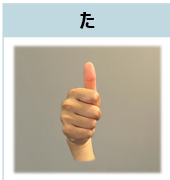
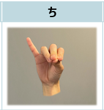
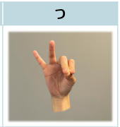
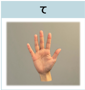
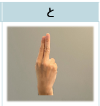

た
「た」の指文字
いわゆる「いいね!」ジェスチャーのように親指だけを立てて表現します。

ち
「ち」の指文字 小指だけ立てて他の4本指は輪を描くようにくっつけます。

つ
「つ」の指文字
小指と薬指を立て、残り3本指は輪を描くようにくっつけます。

て
「て」の指文字 「やあ!」と挨拶する感じで相手に手のひらを向けます。

と
「と」の指文字
手の甲を相手側に向けて軽く握り、人差し指と中指を立てます。